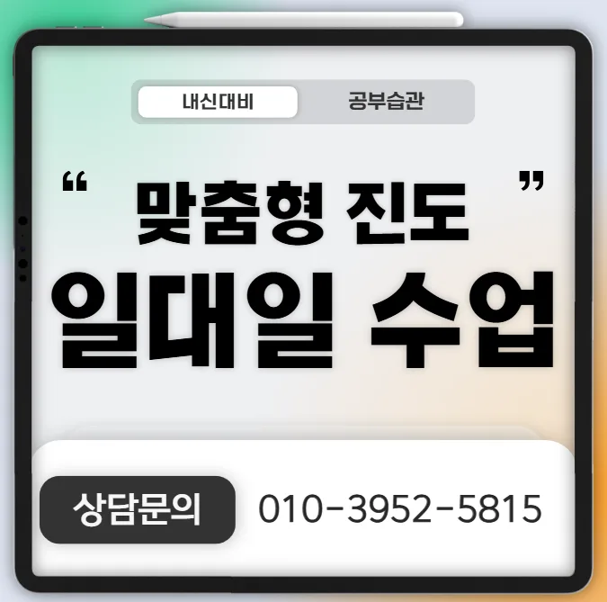

교육기관을 선택할 때는 목표와 환경을 먼저 살펴보는 것이 중요해요. 부모님은 아이의 현재 실력과 성장 가능성을 고려해 맞춤 프로그램을 찾는 것이 좋거든요. 학생은 스스로 학습 스타일을 파악하고 집중도가 높은 시간대를 잡으면 효율이 올라요. 우리 동네는 조용한 주거 환경과 다양한 교육기관이 모여 있어 선택 폭이 넓어요. 전문가들은 강사의 경력과 교육 철학을 확인하고 체험 수업을 통해 실제 분위기를 직접 느껴보라고 권해요. 방문 시 교재와 학습 자료가 최신 교육 과정과 연계돼 있는지 체크하면 도움이 돼요. 비용은 가성비를 따져보되, 단순 저렴함보다 교육 효과와 지속 가능성을 우선 고려해요. 주변 학부모들의 후기와 입소문을 통해 실제 만족도를 파악하고 직접 질문해 보는 것이 안전해요. 특히 기흥구청은 교육열이 높고 기흥구청 중학생학원 밀집도가 적당해 비교가 수월해요.
이 지역은 아파트형 주거단지가 많아 비교적 조용한 환경에서 공부하기에 좋은 분위기를 제공해요. 학군이 우수하고 주변에 도서관과 공원이 가까워 학습 외 활동을 쉽게 병행할 수 있거든요. 초등 저학년은 짧은 시간에 시각 자료를 활용해 흥미를 유지하는 것이 효과적이며, 초등 고학년은 집중력을 높이기 위해 스마트폰을 책상 밖에 두는 습관이 도움이 돼요. 중학생은 문제집을 두 번 이상 풀면서 개념을 반복 노출하는 방식이 성적 향상에 기여하고, 고등학생은 개별 맞춤 지도가 필요하다고 보여요. 전체 학년에서는 반복 수업을 통해 시간 배분 전략을 체득하는 것이 학습 효율을 높인다고 생각해요.
와와학습코칭센터는 수업 중 학생의 반응을 실시간으로 추적해 맞춤형 피드백을 제공하는 시스템을 운영해요. 주된 대상은 중고등학생으로, 특히 시험 직전 오답 체크에 강점이 있어요. 커리큘럼은 기본 개념 정리 심화 문제 풀이 오답 분석 순서로 짜여 있어 체계적이에요. 바둑주2회반은 120,000원, 바둑주3회반은 140,000원이라는 가격대로 운영돼 가성비가 뛰어나죠. 비교급 형용사를 활용해 학습 난이도를 조절하면서도 학생 개개인의 성장 속도를 고려해 수업을 진행해요. 기흥구청 주변에 위치한 만큼 통학이 편리하고, 주변 기흥구청 중학생학원가와 차별화된 집중력 유지형 수업 구조가 큰 장점이에요. 이러한 차별화된 강점 때문에 학부모들이 꾸준히 찾는 이유가 여기 있답니다.
| 학원명 | 와와학습코칭학원 |
| 수강료 | 바둑주2회반 120,000원 | 바둑주3회반 140,000원 |
CURRICULUM
학생마다 학습 성향이 다르기 때문에 커리큘럼을 유연하게 구성해요. 개념 이해 단계에서는 핵심 원리를 짧게 정리하고, 응용 단계에서는 실제 시험 문제를 중심으로 전략을 적용해요. 시험 시간에는 배점 비중에 따라 우선순위를 정하고, 어려운 문제는 스킵 후 재검토하는 패턴을 연습해요. 매주 모의고사를 통해 실전 감각을 유지하고, 오답 노트를 활용해 약점을 보완해요. 이렇게 단계별로 목표와 방법을 명확히 하면 학습 효율이 크게 상승해요.
학생들은 기흥구청 중학생학원 선택 단계에서 과도한 시설에만 끌려 등록을 서두르는 경우가 많아요. 등록 후에는 목표 설정이 흐릿해져 학습 동기가 저하되는 문제가 발생해요. 학습 관리 단계에서는 복습 주기가 불규칙해 기억 유지가 어려워요. 이러한 실수를 예방하려면 체계적인 진단과 구체적인 계획이 필요해요. 또한, 피드백을 통해 지속적인 점검을 하는 것이 효과적이에요. 학부모와의 정기적인 대화로 학습 방향을 재조정하면 안정적인 성장에 도움이 돼요. 끝으로, 목표 달성 여부를 시각화하여 동기 부여를 강화하는 것이 중요해요.
와와기흥구청 중학생학원은 지역 특성을 반영해 교통이 편리하고 조용한 환경을 선택해 학습에 집중할 수 있게 해요. 설립 초기에는 학생들이 스스로 질문을 만들고 탐구하도록 돕는 교육 철학을 세웠다고 생각해요. 수업 초반에는 핵심 질문을 제시하고, 학생들이 자유롭게 의견을 나누며 개념을 재구성하도록 유도해요. 이렇게 하면 장기 목표에 대한 의욕이 회복되고, 학습 과정 중 집중 구간을 스스로 관리하게 된다고 생각해요. 함수의 역함수 개념을 선행 수준에서 소개하고, 실생활 예시와 연결해 이해를 돔는 방식을 적용해요. 매주 진행되는 목표 점검 시간에는 학생 스스로 진도와 난이도를 평가하고, 교사가 피드백을 제공해요. 이러한 전략은 학습 효율을 높이고, 학생이 스스로 성장한다는 만족감을 얻는 데 큰 도움이 된다고 생각해요.
초등학교 6학년으로 과제는 꾸준히 수행하지만 창의적인 풀이에 소극적인 학생에게 특히 적합해요. 목표는 명확하지만 실천이 부족한 경우, 맞춤형 피드백과 단계별 동기 부여가 큰 도움이 될 거예요.
다녀오니 오답 요약 관리가 정말 체계적으로 되어 있어서 복습할 때 훨씬 수월해졌다고 하더라고요. 매주 진행되는 오답 자동 알림 시스템 덕분에 공부 효율이 많이 올라갔다고 좋아해요. 선생님 수업 리듬이 자연스러워서 아이가 수업 내내 집중력을 잘 유지한다는 얘기도 하고, 매 수업마다 테스트가 있어서 공부가 흐트러지지 않아서 다행이라고 하더라고요. 소규모 조별 활동을 하면서 서로를 믿는 친구가 생겼다는 말에 정말 잘 보냈다는 생각이 들었답니다. 아이가 기흥구청 중학생학원 가는 걸 즐거워하고 스스로 변화한다는 게 가장 큰 후기인 것 같아요.

| 학원명 | 와와학습코칭학원 |
| 등록번호 | 제3918호 |